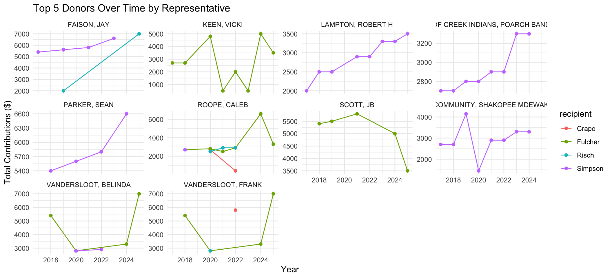

Once you’ve done that, you’ll need to load your packages. In this case, it’s just the tidyverse.
Code
library(tidyverse)
Warning: package 'ggplot2' was built under R version 4.4.1
Warning: package 'tibble' was built under R version 4.4.1
Warning: package 'purrr' was built under R version 4.4.1
Warning: package 'stringr' was built under R version 4.4.1
── Attaching core tidyverse packages ──────────────────────── tidyverse 2.0.0 ──
✔ dplyr 1.1.4 ✔ readr 2.1.5
✔ forcats 1.0.0 ✔ stringr 1.5.2
✔ ggplot2 3.5.2 ✔ tibble 3.3.0
✔ lubridate 1.9.3 ✔ tidyr 1.3.1
✔ purrr 1.1.0
── Conflicts ────────────────────────────────────────── tidyverse_conflicts() ──
✖ dplyr::filter() masks stats::filter()
✖ dplyr::lag() masks stats::lag()
ℹ Use the conflicted package (<http://conflicted.r-lib.org/>) to force all conflicts to become errors
Reading in the Data
Following up on our last lesson, we’ll use read_delim to bring in each dataset. You should use glimpse and summary to check out each dataset, but I’ll skip that here so we can focus on the new stuff.
Warning: One or more parsing issues, call `problems()` on your data frame for details,
e.g.:
dat <- vroom(...)
problems(dat)
Rows: 4001 Columns: 78
── Column specification ────────────────────────────────────────────────────────
Delimiter: ","
chr (51): committee_id, committee_name, report_type, filing_form, line_numb...
dbl (9): report_year, image_number, link_id, file_number, contribution_rec...
lgl (16): recipient_committee_org_type, is_individual, memo_code_full, cand...
dttm (2): contribution_receipt_date, load_date
ℹ Use `spec()` to retrieve the full column specification for this data.
ℹ Specify the column types or set `show_col_types = FALSE` to quiet this message.
You’ll notice that both the risch_receipts and fulcher_receipts return a parsing problem. We can inspect that by calling:
Code
problems(risch_receipts)
# A tibble: 5 × 5
row col expected actual file
<int> <int> <chr> <chr> <chr>
1 2348 17 1/0/T/F/TRUE/FALSE C /Users/mattwilliamson/Websites/isdrfall…
2 2349 17 1/0/T/F/TRUE/FALSE C /Users/mattwilliamson/Websites/isdrfall…
3 2448 17 1/0/T/F/TRUE/FALSE C /Users/mattwilliamson/Websites/isdrfall…
4 2500 17 1/0/T/F/TRUE/FALSE C /Users/mattwilliamson/Websites/isdrfall…
5 2543 17 1/0/T/F/TRUE/FALSE C /Users/mattwilliamson/Websites/isdrfall…
You’ll see that the errors correspond to column 17. We can figure out what that is by using the names function and providing an index. We can use [ notation to index specific locations in a dataset (you can learn more about indexing here. So to figure out what the 17th column is and why it might be causing problems we can run:
Code
names(risch_receipts)[17]
[1] "recipient_committee_org_type"
If you use glimpse you’ll see that read_ interpreted the recipient_committee_org_type column as logical (probably because there were so many NA) and that the problem is flagged for the character entries that did show up in the data. We’re not particularly worried about this (or the ones in the fulcher_receipts data) so we’ll move on, but you should use this workflow to check problems anytime you bring new data in via the read_ family of functions.
Focusing on Relevant Columns
This dataset has a ton of columns, many of which are unnecessary for this analysis. When datasets have this many columns, it can be easy to get lost in the data. Not only that, but these columns can often create unanticipated problems for things like calculations and joins. I find it’s best to focus only on the parts of the data that I need for the analysis. Our interest is in individual donors, their annual contribution over time, and the recipient. We’ll combine the select and filter functions from dplyr to create that dataset now. I create a vector (select_vars) with the column names that I want and use the all_of helper inside select to let R know that I want all of the columns that match the names in my vector. I then use filter to subset the rows to only those where is_individual is TRUE so that I only have the individual donors. We use the %>% operator to pipe the data frame returned from each function into the next one so we don’t have to create a bunch of intermediate objects.
You’ll notice that one of the benefits of this approach is that you can use the order of the variables in your select_vars to order the columns in the way that you want them to appear in the final dataframe. Once we’ve selected the right columns and filtered the to the individual donors, we can use glimpse to make sure that things look right (in this case we only kept 1933 of the 4257 donations and 5 of the 78 columns).
In this exercise, I’m just copying the code for each dataset and replacing the relevant object names. This is NOT a great approach as it can lead to errors. I’ll show you the cleaner way in our next example on functions and iteration.
Finding the Top 5 Donors
To find the Top 5 Donors, we first have to figure out how much each person has given and then find the 5 highest values within the reciepts for that Congressman. We’ll do that by using group_by and summarize calculate a new, aggregated value (called total_given). Then we’ll use a special version of filter called slice_ to find the correct donors. Finally, we use mutate to create a new column that denotes which person the data came from.
Because all of these dataframes have the same columns (i.e., the same variables, with the same datatypes), we can combine them into a single top 5 donors dataframe using bind_rows.
# A tibble: 20 × 3
contributor_name total_given recipient
<chr> <dbl> <chr>
1 FAISON, JAY 23400 Simpson
2 OF CREEK INDIANS, POARCH BAND 23400 Simpson
3 PARKER, SEAN 23400 Simpson
4 SIOUX COMMUNITY, SHAKOPEE MDEWAKANTON 23400 Simpson
5 LAMPTON, ROBERT H 22900 Simpson
6 SCOTT, JB 25200 Fulcher
7 KEEN, VICKI 21700 Fulcher
8 ROOPE, CALEB 20800 Fulcher
9 VANDERSLOOT, BELINDA 18500 Fulcher
10 VANDERSLOOT, FRANK 18500 Fulcher
11 ZOOK, SUSAN STONER 15600 Crapo
12 DUCHOSSOIS, CRAIG J. MR. 12800 Crapo
13 ARNOLD, JOHN D. MR. 12400 Crapo
14 DWYER, NANCY 12000 Crapo
15 SINGER, PAUL 11200 Crapo
16 KTELEH, TAREK 16100 Risch
17 MOUJTAHED, SAED 13300 Risch
18 BLAVATNIK, LEONARD 12600 Risch
19 PFAUTCH, ROY 12600 Risch
20 SINGER, PAUL 12600 Risch
Relational Data for Fun (and Donations)
One of the things we’ll use frequently in this class are the _join family of function in dplyr. These functions provide a way of combining datasets based on shared variable attributres. For example, if we wanted to learn more about each of these donors, we might create a single receipts dataframe with all of our individual donations, select all of the variables that contain contributor, filter them using distinct (which keeps unique combinations of the variables), and then join them back to our top5_donors frame.
Warning in left_join(., all_contributors, by = join_by(contributor_name)): Detected an unexpected many-to-many relationship between `x` and `y`.
ℹ Row 1 of `x` matches multiple rows in `y`.
ℹ Row 681 of `y` matches multiple rows in `x`.
ℹ If a many-to-many relationship is expected, set `relationship =
"many-to-many"` to silence this warning.
# A tibble: 39 × 6
contributor_name total_given recipient contributor_city contributor_state
<chr> <dbl> <chr> <chr> <chr>
1 FAISON, JAY 23400 Simpson CHARLOTTE NC
2 FAISON, JAY 23400 Simpson CHARLOTTE NC
3 FAISON, JAY 23400 Simpson CHARLOTTE NC
4 OF CREEK INDIANS, P… 23400 Simpson ATMORE AL
5 PARKER, SEAN 23400 Simpson PALO ALTO CA
6 SIOUX COMMUNITY, SH… 23400 Simpson PRIOR LAKE MN
7 LAMPTON, ROBERT H 22900 Simpson JACKSON MS
8 SCOTT, JB 25200 Fulcher BOISE ID
9 SCOTT, JB 25200 Fulcher BOISE ID
10 KEEN, VICKI 21700 Fulcher BOISE ID
# ℹ 29 more rows
# ℹ 1 more variable: contributor_employer <chr>
You’ll get a warning when you do this because some of our top 5 contributors have multiple entries for city and state in the receipts dataset. You’ll also notice that the employer is not uniformly entered. If this were a real analysis, you’d need to decide what to do (if anything) about some of these issues.If you take a look, you might imagine that some of these folks have moved at least once during the period we’re looking at, but is it possible that all of these businesses are different? We aren’t going to try and clean all of this up now (you’ll need some regular expression (regex) skills for that), but I wanted to show you how you might join data (and why having a good relational database structure is important).
Identifying (non)Overlapping Data
Joins are powerful for combining dataets, but they can also be useful for identifying (non)overlapping data between datasets. For example, maybe we want to see if our two Senators recieve donations from any of the same individuals. We can use an inner_join to identify those elements in one dataset that are also in the second.
Code
crapo_risch_shared <- crapo_top5 %>%inner_join(risch_top5, by ="contributor_name")crapo_risch_shared
We can also identify which donors are not shared by the two Senators using an anti_join
Code
crapo_risch_notshared <- crapo_top5 %>%anti_join(risch_top5, by ="contributor_name")crapo_risch_notshared
# A tibble: 4 × 3
contributor_name total_given recipient
<chr> <dbl> <chr>
1 ZOOK, SUSAN STONER 15600 Crapo
2 DUCHOSSOIS, CRAIG J. MR. 12800 Crapo
3 ARNOLD, JOHN D. MR. 12400 Crapo
4 DWYER, NANCY 12000 Crapo
Tip
The _join family accepts a by argument that tells dplyr which columns it should base the join by. You can supply multiple variables for by and even supply variables that have different names (but the same meaning) in the two datasets. If you don’t supply a by argument dplyr chooses all of the columns that have the same name. Joins can be tricky, you should definitely look at the help file and check out this resource.
Donations Through Time
Now that we’ve identified the top 5 donors for each candidate we can return to asking questions about how those contributions have varied through time. Let’s look at the 10 largest donors during our time period. You know all of these commands except pull which takes the variable you give it (contributor_name) and returns a vector with all of the values in the variable. This gives us our vector of names to look for in the dataset.
Code
overall_top10_names <- top5_donors %>%arrange(desc(total_given)) %>%slice_max(order_by = total_given, n =10) %>%pull(contributor_name)overall_top10_names
Then we’ll filter those for contributors in our top 10 list (notice the use of the %in% operator which tells R to filter rows containing any of the values in our top 10 list). Then we’ll group the data by year, representative, and donor to create an aggregated donation amount for each year, for each representative, from each donor.
`summarise()` has grouped output by 'report_year', 'recipient'. You can
override using the `.groups` argument.
Code
top10_receipts
# A tibble: 73 × 4
report_year recipient contributor_name total_given
<dbl> <chr> <chr> <dbl>
1 2017 Fulcher KEEN, VICKI 2700
2 2017 Simpson FAISON, JAY 5400
3 2017 Simpson LAMPTON, ROBERT H 2000
4 2017 Simpson OF CREEK INDIANS, POARCH BAND 2700
5 2017 Simpson SIOUX COMMUNITY, SHAKOPEE MDEWAKANTON 2700
6 2018 Fulcher KEEN, VICKI 2700
7 2018 Fulcher ROOPE, CALEB 2700
8 2018 Fulcher SCOTT, JB 5400
9 2018 Fulcher VANDERSLOOT, BELINDA 5400
10 2018 Fulcher VANDERSLOOT, FRANK 5400
# ℹ 63 more rows
This data is in long format. This allows us some flexibility as the numeric values are all in a single column (total_given) and each row corresponds to different observation combinations (like year, donor, and recipient). We can plot that using ggplot (also part of the tidyverse). A few things to point out. Inside the aes call we are telling R which of the variables we want to use for each of the plot aesthetics (like the axes, colors, fills, etc). The geom_ tells ggplot what sort of geometry we want to use. The facet_ tells R to create small multiples using the variable contributor_name.
Code
ggplot(data = top10_receipts, mapping =aes(x = report_year, y = total_given, color = recipient)) +geom_line() +geom_point()+facet_wrap(vars(contributor_name), scales ="free_y") +labs(title ="Top 5 Donors Over Time by Representative",x ="Year",y ="Total Contributions ($)" ) +theme_minimal()

Final Thoughts
Based on these graphs, you can see that very few of our top donors contribute to more than one candidate. You’ll also notice that some folks give consistently (and sometimes consistently more), while others seem to drop out at various times. Interesting! While none of us may be experts at campaign finance, we have certainly gotten better at data-wrangling with dplyr!! Now that you’ve gotten your clean dataset, let’s save it for future use! You’ll notice that instead of read_ we use write_ (because we’re saving something). You’ll also notice that we’ve changed the folder to the processed folder so that we don’t confuse this with the original data!
While there are lots of reasons to prefer long format, most of our spatial data will be in wide format where each row is an individual location that may have multple attributes (in columns). We can use the tidyr (in the tidyverse) pivot_wider function (there’s also a pivot_longer) to take our long data and make it wide. With the names_from argument we’re telling R which column we want the new column names to come from (here it’s our year). With values_from we’re telling R where the numbers (or entries) should come from to fill in the columns. Finally, with values_fill we’re telling R what to do with any missing year/total_given values.
This is less convenient for creating time series style graphs, but if we wanted to geocode each donor’s location to map it, this format would be considerably easier to deal with (with less redundancy in the spatial information). We’ll talk more about this next week.
Source Code
---title: "Cleaning up Election (Data)"---## ObjectivesWe're going practice using the **tidyverse** — especially `dplyr` and `tidyr` — to clean, summarize, and join datasets to answer this question: > **Who are the five biggest individual donors for each representative, and how do their giving patterns compare over time?**You will work with the [FEC contribution receipts](https://www.fec.gov/data/) for our four member of Congress. ## Getting Set UpFirst, [join the repository](https://classroom.github.com/a/X4ivBDX3). Then, we'll have to [get our credentials](https://rstudio.aws.boisestate.edu/) and login to a [new RStudio session](https://rstudio.apps.aws.boisestate.edu/). Finally, create a new, version control, git-based project (using the link to the repo you just created). Once you've done that, you'll need to load your packages. In this case, it's just the `tidyverse`.```{r ldpkg}library(tidyverse)```## Reading in the DataFollowing up on our last lesson, we'll use `read_delim` to bring in each dataset. You should use `glimpse` and `summary` to check out each dataset, but I'll skip that here so we can focus on the new stuff.```{r rddata}simpson_receipts <-read_delim("data/original/simpson_fec_17_26.csv",delim =",")fulcher_receipts <-read_delim("data/original/fulcher_fec_17_26.csv",delim =",")crapo_receipts <-read_delim("data/original/crapo_fec_17_26.csv",delim =",")risch_receipts <-read_delim("data/original/risch_fec_17_26.csv",delim =",")```You'll notice that both the `risch_receipts` and `fulcher_receipts` return a parsing problem. We can inspect that by calling:```{r probrisch}problems(risch_receipts)```You'll see that the errors correspond to column 17. We can figure out what that is by using the `names` function and providing an index. We can use `[` notation to index specific locations in a dataset (you can [learn more about indexing here](https://rspatial.org/intr/4-indexing.html). So to figure out what the 17th column is and why it might be causing problems we can run:```{r colrisch}names(risch_receipts)[17]```If you use `glimpse` you'll see that `read_` interpreted the `recipient_committee_org_type` column as `logical` (probably because there were so many `NA`) and that the problem is flagged for the `character` entries that did show up in the data. We're not particularly worried about this (or the ones in the `fulcher_receipts` data) so we'll move on, but you should use this workflow to check problems anytime you bring new data in via the `read_` family of functions.## Focusing on Relevant ColumnsThis dataset has a ton of columns, many of which are unnecessary for this analysis. When datasets have this many columns, it can be easy to get lost in the data. Not only that, but these columns can often create unanticipated problems for things like calculations and joins. I find it's best to focus only on the parts of the data that I need for the analysis. Our interest is in _individual donors_, _their annual contribution over time_, and the _recipient_. We'll combine the `select` and `filter` functions from `dplyr` to create that dataset now. I create a vector (`select_vars`) with the column names that I want and use the `all_of` helper inside `select` to let `R` know that I want all of the columns that match the names in my vector. I then use `filter` to subset the rows to only those where `is_individual` is `TRUE` so that I only have the individual donors. We use the ` %>% ` operator to `pipe` the data frame returned from each function into the next one so we don't have to create a bunch of intermediate objects.You'll notice that one of the benefits of this approach is that you can use the order of the variables in your `select_vars` to order the columns in the way that you want them to appear in the final dataframe. Once we've _selected_ the right columns and _filtered_ the to the individual donors, we can use glimpse to make sure that things look right (in this case we only kept 1933 of the 4257 donations and 5 of the 78 columns).```{r subdata}select_vars <-c("is_individual", "contributor_name", "contribution_receipt_amount", "committee_name", "report_year")simpson_subset <- simpson_receipts %>%select(all_of(select_vars)) %>%filter(is_individual ==TRUE)fulcher_subset <- fulcher_receipts %>%select(all_of(select_vars)) %>%filter(is_individual ==TRUE)crapo_subset <- crapo_receipts %>%select(all_of(select_vars)) %>%filter(is_individual ==TRUE)risch_subset <- risch_receipts %>%select(all_of(select_vars)) %>%filter(is_individual ==TRUE)glimpse(simpson_subset)```::: {.callout-note}In this exercise, I'm just copying the code for each dataset and replacing the relevant object names. This is **NOT** a great approach as it can lead to errors. I'll show you the cleaner way in our next example on functions and iteration.:::## Finding the Top 5 DonorsTo find the Top 5 Donors, we first have to figure out how much each person has given and then find the 5 highest values within the reciepts for that Congressman. We'll do that by using `group_by` and `summarize` calculate a new, aggregated value (called `total_given`). Then we'll use a special version of `filter` called `slice_` to find the correct donors. Finally, we use `mutate` to create a new column that denotes which person the data came from. ```{r topfive}simpson_top5 <- simpson_subset %>%group_by(contributor_name) %>%summarise(total_given =sum(contribution_receipt_amount, na.rm =TRUE)) %>%slice_max(order_by = total_given, n =5) %>%mutate(recipient ="Simpson")fulcher_top5 <- fulcher_subset %>%group_by(contributor_name) %>%summarise(total_given =sum(contribution_receipt_amount, na.rm =TRUE)) %>%slice_max(order_by = total_given, n =5) %>%mutate(recipient ="Fulcher")crapo_top5 <- crapo_subset %>%group_by(contributor_name) %>%summarise(total_given =sum(contribution_receipt_amount, na.rm =TRUE)) %>%slice_max(order_by = total_given, n =5) %>%mutate(recipient ="Crapo")risch_top5 <- risch_subset %>%group_by(contributor_name) %>%summarise(total_given =sum(contribution_receipt_amount, na.rm =TRUE)) %>%slice_max(order_by = total_given, n =5) %>%mutate(recipient ="Risch")glimpse(simpson_top5)```Because all of these dataframes have the same columns (i.e., the same variables, with the same datatypes), we can combine them into a single top 5 donors dataframe using `bind_rows`.```{r combdf}top5_donors <-bind_rows(simpson_top5, fulcher_top5, crapo_top5, risch_top5)top5_donors```## Relational Data for Fun (and Donations)One of the things we'll use frequently in this class are the `_join` family of function in `dplyr`. These functions provide a way of combining datasets based on shared variable attributres. For example, if we wanted to learn more about each of these donors, we might create a single `receipts` dataframe with all of our individual donations, `select` all of the variables that contain `contributor`, filter them using `distinct` (which keeps unique combinations of the variables), and then join them back to our `top5_donors` frame.```{r ljoin}all_contributors <-bind_rows(select(simpson_receipts, contains("contributor")),select(fulcher_receipts, contains("contributor")),select(crapo_receipts, contains("contributor")),select(risch_receipts, contains("contributor"))) %>%select(all_of(c("contributor_name","contributor_city", "contributor_state", "contributor_employer" ))) %>%distinct()(top5_donors_location <- top5_donors %>%left_join(all_contributors, by =join_by(contributor_name)))```You'll get a warning when you do this because some of our top 5 contributors have multiple entries for city and state in the receipts dataset. You'll also notice that the employer is not uniformly entered. If this were a real analysis, you'd need to decide what to do (if anything) about some of these issues.If you take a look, you might imagine that some of these folks have moved at least once during the period we're looking at, but is it possible that all of these businesses are different? We aren't going to try and clean all of this up now (you'll need some regular expression (regex) skills for that), but I wanted to show you how you might join data (and why having a good relational database structure is important).### Identifying (non)Overlapping DataJoins are powerful for combining dataets, but they can also be useful for identifying (non)overlapping data between datasets. For example, maybe we want to see if our two Senators recieve donations from any of the same individuals. We can use an `inner_join` to identify those elements in one dataset that are also in the second.```{r shared}crapo_risch_shared <- crapo_top5 %>%inner_join(risch_top5, by ="contributor_name")crapo_risch_shared```We can also identify which donors are not shared by the two Senators using an `anti_join````{r notshared}crapo_risch_notshared <- crapo_top5 %>%anti_join(risch_top5, by ="contributor_name")crapo_risch_notshared```::: {.callout-tip}The `_join` family accepts a `by` argument that tells `dplyr` which columns it should base the join by. You can supply multiple variables for `by` and even supply variables that have different names (but the same meaning) in the two datasets. If you don't supply a `by` argument `dplyr` chooses all of the columns that have the same name. Joins can be tricky, you should definitely look at the help file and [check out this resource](https://thomasadventure.blog/posts/r-merging-datasets/).:::## Donations Through TimeNow that we've identified the top 5 donors for each candidate we can return to asking questions about how those contributions have varied through time. Let's look at the 10 largest donors during our time period. You know all of these commands except `pull` which takes the variable you give it (`contributor_name`) and returns a vector with all of the values in the variable. This gives us our vector of names to look for in the dataset.```{r getnames}overall_top10_names <- top5_donors %>%arrange(desc(total_given)) %>%slice_max(order_by = total_given, n =10) %>%pull(contributor_name)overall_top10_names```Now we'll combine all of the individual donor data (with years) that we created earlier.```{r combrec}individual_receipts <-bind_rows( simpson_subset %>%mutate(recipient ="Simpson"), fulcher_subset %>%mutate(recipient ="Fulcher"), crapo_subset %>%mutate(recipient ="Crapo"), risch_subset %>%mutate(recipient ="Risch"))```Then we'll `filter` those for contributors in our top 10 list (notice the use of the `%in%` operator which tells `R` to filter rows containing any of the values _in_ our top 10 list). Then we'll group the data by year, representative, and donor to create an aggregated donation amount for each year, for each representative, from each donor. ```{r}top10_receipts <- individual_receipts %>%filter(contributor_name %in% overall_top10_names) %>%group_by(report_year, recipient, contributor_name) %>%summarize(total_given =sum(contribution_receipt_amount, na.rm =TRUE)) %>%ungroup()top10_receipts```This data is in **long format**. This allows us some flexibility as the numeric values are all in a single column (`total_given`) and each row corresponds to different observation combinations (like year, donor, and recipient). We can plot that using `ggplot` (also part of the `tidyverse`). A few things to point out. Inside the `aes` call we are telling `R` which of the variables we want to use for each of the plot aesthetics (like the axes, colors, fills, etc). The `geom_` tells `ggplot` what sort of geometry we want to use. The `facet_` tells `R` to create small multiples using the variable `contributor_name`.```{r plot1}#| fig-width: 11ggplot(data = top10_receipts, mapping =aes(x = report_year, y = total_given, color = recipient)) +geom_line() +geom_point()+facet_wrap(vars(contributor_name), scales ="free_y") +labs(title ="Top 5 Donors Over Time by Representative",x ="Year",y ="Total Contributions ($)" ) +theme_minimal()```## Final ThoughtsBased on these graphs, you can see that very few of our top donors contribute to more than one candidate. You'll also notice that some folks give consistently (and sometimes consistently more), while others seem to drop out at various times. Interesting! While none of us may be experts at campaign finance, we have certainly gotten better at data-wrangling with `dplyr`!! Now that you've gotten your clean dataset, let's save it for future use! You'll notice that instead of `read_` we use `write_` (because we're saving something). You'll also notice that we've changed the folder to the `processed` folder so that we don't confuse this with the original data!```{r}write_csv(top10_receipts, "data/processed/id_fec_top10.csv")```## A Note on Long and Wide FormatWhile there are lots of reasons to prefer long format, most of our spatial data will be in **wide** format where each row is an individual location that may have multple attributes (in columns). We can use the `tidyr` (in the `tidyverse`) `pivot_wider` function (there's also a `pivot_longer`) to take our long data and make it wide. With the `names_from` argument we're telling `R` which column we want the new column names to come from (here it's our year). With `values_from` we're telling `R` where the numbers (or entries) should come from to fill in the columns. Finally, with `values_fill` we're telling R what to do with any missing year/total_given values.```{r wider}top10_reciepts_wide <- top10_receipts %>%pivot_wider(names_from = report_year, values_from = total_given, values_fill =0)top10_reciepts_wide```This is less convenient for creating time series style graphs, but if we wanted to geocode each donor's location to map it, this format would be considerably easier to deal with (with less redundancy in the spatial information). We'll talk more about this next week.